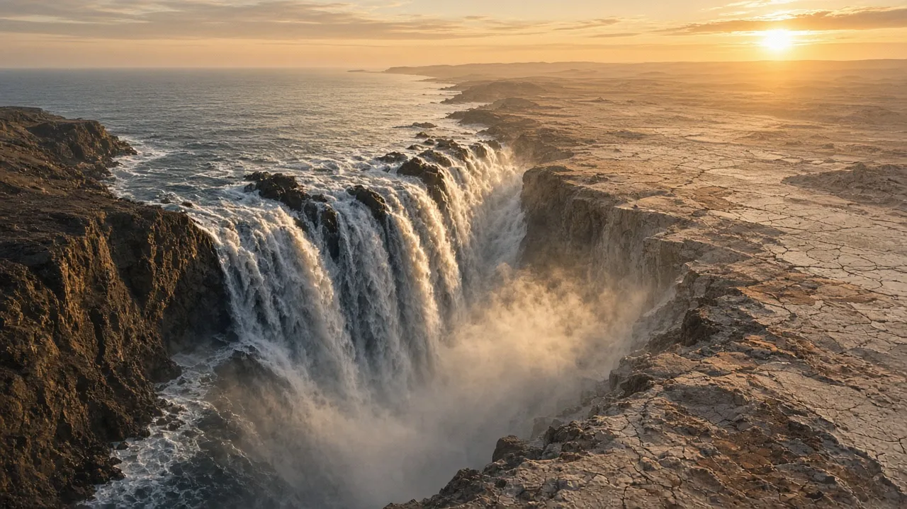

البحار، حيث يلتقي المحيط باليابسة
ما الذي يجعل البحر بحراً، وكيف جفّ البحر المتوسط ثم امتلأ من جديد.
TODO machine-draft translation: English for review.

Artist’s interpretation — SI render made for Before Saving Planets; science per cited sources (not a photo).

Jeff Schmaltz, MODIS Land Rapid Response Team, NASA GSFC, public domain. File page
.jpg){kind=link}
Ocean or sea?
Seas are smaller than oceans and are usually found where the land and ocean meet, often partly enclosed by land.
The Mediterranean dried up
About 6 million years ago, during the Messinian Salinity Crisis, the Mediterranean was cut off from the Atlantic and largely evaporated, leaving thick salt layers.
…and refilled
About 5.33 million years ago, Atlantic water broke through at the Strait of Gibraltar and refilled the basin, possibly within a few years — the Zanclean flood.
A sea being born
The Red Sea is a young sea forming as Africa and Arabia pull apart — part of the same rift system as the East African Rift.
Sources
Keep digging: Continents on the MoveOceans: Earth’s Blue EngineThe Dead Sea: Lowest Place on Land · Deep Time